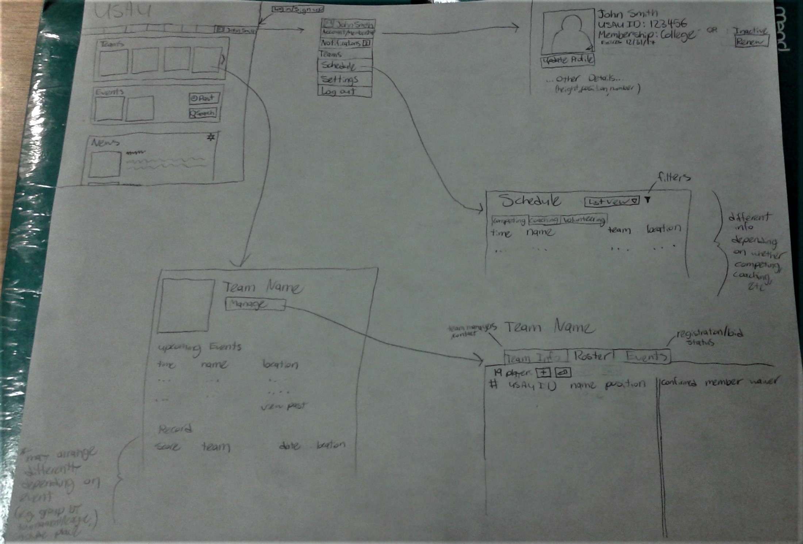

Low-Fi Prototype
Prototype Evaluation
To evaluate my low-fi prototype, I spoke with two current Ultimate players. Because I am just now receiving data from a survey that I sent out to the Ultimate community at large, some of the changes I plan to make for my next prototype will be based off of this new information and will be mentioned here.
For the next prototype, I plan on moving the current membership and waiver status to the main dashboard because easy access to this information for renewal was believed to be important by one of my interviewees. This change would likely make the membership renewal process even quicker.
I also plan on switching the list view of events for a player's schedule to a calendar (likely an embedded Google calendar due to the apparent popularity of that tool, according to survey results) with a sidebar listing upcoming events so that more details for those may be immediately visible. This change was suggested by my other interviewee. Because players do not seem to manage their volunteering often through USAU, I'll remove that tab and only display the tabs at all if the individual holds a coaching position.
My first interviewee also suggested that I add an option to see all teams to avoid requiring the user to click through them. Although she mentioned having this link lead to a new page with a list of all teams, I'd prefer to have a link to view an archive of past teams as well as an option to indicate which teams you want archived and which you want displayed on the player dashboard. This change should help to satisfy survey subjects who expressed interest in easily viewing past teams, rosters, and results.